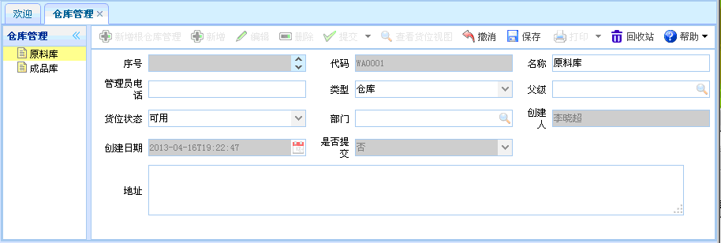

仓库管理
仓库管理
一、概述：仓库管理，建立一些仓库及其货位。
二、流程图演示：如下图所示。
图表【流程图】
三、功能介绍：点击【仓库管理】，进入仓库管理页面，如下图所示。功能主要包括：新增根仓库管理、新增、编辑、删除、提交、查看货位视图。
图表4-14-1【仓库管理】
【新增根仓库管理】：点击新增根仓库管理按钮，如下图所示。新增根仓库时，红色文本框为必填项，灰色文本框为默认，有搜索图案的要进行查询。若取消，点击撤消。

图表4-14-2【新增根仓库管理】
【新增】：在仓库管理中选择仓库，为该仓库创建新的货区。然后点击新增按钮，如下图所示。新增完毕，点击保存。新增时，红色文本框为必填项，灰色文本框为默认，有搜索图案的要进行查询。若取消，点击撤消。
图表4-14-3【新增】
【编辑】：在【仓库管理】中选择一个仓库，然后点击编辑按钮后，出现如下图所示内容。进行编辑操作。编辑时，灰色文本框为默认，有搜索图案的要进行查询。

图表4-14-4【编辑】
图表4-14-4【编辑】
【删除】在【仓库管理】中选择一个仓库后，点击删除，即可删除该仓库信息。
【提交】在【仓库管理】中选择一个仓库后，点击提交，即可提交该仓库信息，已提交的单据不能再次提交。
【查看货位视图】在【仓库管理】中选择一个仓库后，点击【查看货位视图】，如下图所示。

图表4-5-6【查看货位视图】
 常见问题
常见问题
1、？
2、？
3、？